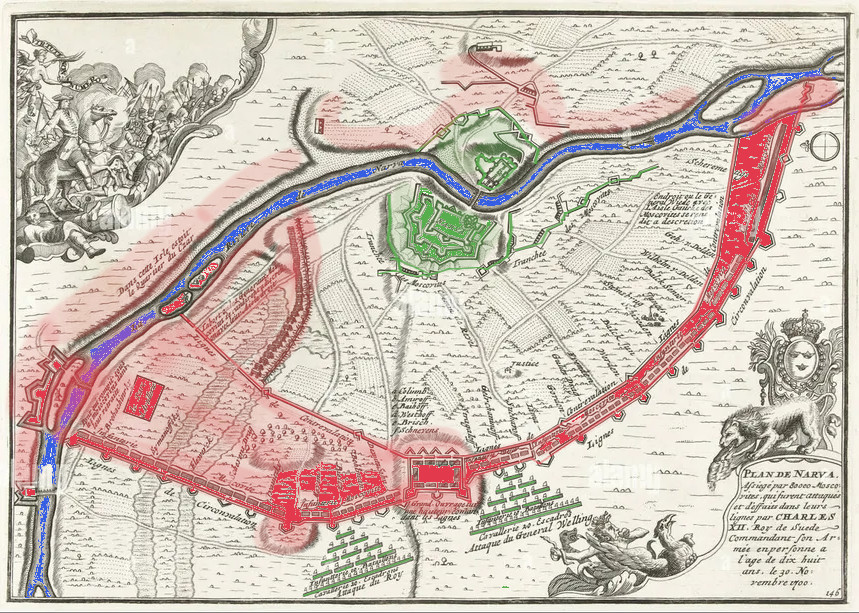

TJUGONDE NOVEMBER
Jan Sandström 2026
March 22, 2026
***
Morgongudstjänstens sista orgeltoner ekade ut i Narva slottskyrka när en redan påpälsad kommendant Horn mötte kyrkoherden på vägen ut. Utifrån hördes oregelbundna knallar från rysk artilleribeskjutning. Officerare strömmade ut från bänkraderna och höll jämna steg med Horn för att hålla sig ájour med det senaste.
– Fältprästerna behövs ända ute på skansarna idag, sa kommendanten.
– Naturligtvis. Hur illa är det?
– De har fått fram fyrtiopundare som slog en bräsch i muren vid Fortuna skans inatt. De lider sannerligen inte brist på vare sig energi eller ammunition.
När de kom ut stannade Horn till i lä av kyrkan medan hans häst leddes fram i snöyran över torget. Ett hästspann med sårade soldater på en vagn genade förbi i hög hastighet. I skydd av hovklappret drog kommendanten till sig adjutant Håård och ropade i hans öra:
– Anders, nu får du förbereda dig på att göra som jag sagt! Följ mina flickor hit till kyrkan och om ryssarna bankar på porten så gör du det vi pratat om, men inte förrän då, och ingen tvekan, kom ihåg det!
Den unge adjutantens ansikte lyste blekt i skenet från granatkrevaderna vid norra muren medan han hastade iväg mot kommendantbostaden till fots.
Horn satt sedan upp för att inspektera Narvas bastioner tillsammans med staben. Först vid Gloria skans anades morgonljus när den svarta himmeln sakta skiftade över i grått. Det hade blivit tillräckligt klart för att känna igen manskapet och i synnerhet det artilleribefäl som för tredje dagen i rad tog till orda framför sin grupp.
– Om kommendanten bara ville kasta ett öga ner i granatförrådet, det vi har kvar skulle ta slut redan idag om vi fick skjuta fritt. Nu gräver de sig närmare och närmare utan att vi kan stoppa dem.
Horn nickade men svarade inte. Det hade bara varit en tidsfråga innan ryssarna skulle märka att fästningens kulor var på upphällningen.
En fortifikationsofficer i Horns sällskap stack våghalsigt fram huvudet framför skyddsmuren under någon sekund för att kunna kasta ett öga ned på bastionens utsida.
– Om de fortsätter med den här kalibern så får vi snart ett ras.
Manskapet utbytte blickar och kommendanten hörde sig själv repetera budskapet han till slut själv börjat tvivla på:
– Upp med humöret pojkar, undsättning är på väg, det är ett som är säkert. Riket har dessutom mäktiga vänner. Men det kräver tid att mönstra och planera en stor räddningsaktion.
– Engelsmännens löften var väl till den gamle kungen, påpekade en soldat med ett uttal som vittnade om stelfrusna läppar.
Horn steg fram till soldaten, såg honom i ögonen och klappade honom sedan på axeln med sin tjocka handske.
– Hansson kan vara lugn. Kungen har ett erfaret råd vid sin sida.
Hanssons ord gnagde ändå i Horn. Den nykrönte kung Karl var just fyllda arton. Det stod klart att han knappast kunde ha odlat några personliga band till Sveriges allierade.
Vid Viktoria skans rapporterade besättningen om ihållande granatregn och hur belägrarna hade fört fram stormstegar under natten. Besättningen på Triumf skans hade förlorat en man efter att fiendens löpgravar under natten nått farligt nära bastionen.
– Håll nere huvudet kommendant, det finns fortfarande skyttar kvar! varnade en soldat när Horn närmade sig murkrönet för att se förändringarna med egna ögon.
Horn tryckte högerkinden tätt mot ett stenblock och blickade ut över muren i västlig riktning mot den skogbeklädda kulle som kallades Hermannsberget. Kylan i stenen förlamade käkmuskeln och en domnad spred sig snabbt över ansiktet. Det gav en bedövande rofylld känsla som han helst ville stanna ett tag i.
Horn betraktade den långsträckta ryska skyddsvallen placerad mellan Hermannsberget och stadens västra mur. Belägrarna hade successivt skottat upp den till en flera meter hög befästningsmur. Nedanför, i rännan från vilken jorden tagits, hade det skapats en lerig och regnvattenfylld vallgrav.
Att vallgraven vätter utåt mot skogen är ett gott tecken, tänkte han. De måste vara oroliga för något.
Kommendantens blick lämnade vallen och sökte sig till fältet nedanför fästningen. Den ständiga aktiviteten därnere, oväsendet av hammarslag, yxor, spadar och sågar var enerverande. Redutter timrades med jämna mellanrum längs vallen. Som skydd för försvararnas kulor reste ryssarna timmerpalissader längs insidan av vallen. Från dessa sicksackade sig allt fler smala löpgravar in mot fästningen.
Luften bar med sig en doft av virke, tjära, krut, vedeldning och begynnande vinter.
Tankarna vandrade till flickorna. Horn mindes hur han som ung kapten blivit stationerad i Narva, en främmande plats i rikets periferi. Han och hustrun Kristina hade anlänt till en liten men livlig handelsstad som låg inbäddad i en böj av floden med Ryssland på bortre sidan. I Narva hade han senare förlorat Kristina i lungsot men döttrarna hade ändå fått ett tryggt hem. Narva var flickornas enda hemstad och därmed blev den också hans.
Nu stängde belägringsvallen och floden in staden från alla håll.
Horn försökte föreställa sig vad som pågick där nere bakom palissaderna. För ett par månader sedan hade allt sett ljusare ut. Trots att garnisonen bestod av hela tvåtusen man så hamnade de i hopplöst underläge så snart belägringen inleddes. Men hela staden litade på att svensk undsättning skulle komma. Horn var stolt över stadsborna som inte darrade ens när tsar Peter anslöt. Lika stolt var han över sin garnison som länge hade utfört omfattande sortier. Med list och kraft hade de slagit till mot ryska ställningar, saboterat leveranser och på så sätt vunnit mycken tid.
Men nu kände kommendanten hur manöverutrymmet krympte för var dag som gick. Vid det här laget formligen trängdes ryssar runt staden. Under två månader hade Horn sett dem anlända i en aldrig sinande ström. Reguljära soldater i sina tjocka gröna eller röda kaftaner, men också grupper utan uniform. Några av de senare var miliser, andra rena banditgäng ute efter plundring och rov.
Kvartermästaren hade med olika metoder försökt räkna på fiendens storlek och enligt den senaste rapporten stod uppemot sjuttiotusen man, varav hälften i uniform, utanför Narva. Kvartermästaren hade påpekat att ett så stort antal omöjligen kunde upprätthållas när allt runtomkring är utplundrat. Något måste hända mycket snart.
Nu väntade denna högljudda brokiga skara otåligt utanför murarna. På insidan förberedde garnisonen invånarna på det värsta.
Vinden vände och Horn gjorde som de andra och höll sin gula scarf för näsan för att slippa andas in röken som blåste in rakt västerifrån. Hans spanare hade flera gånger återvänt därifrån med rapporter som fått förhärdade soldater att gråta. Ryskt rytteri, enligt uppgift uppemot sextusen kosacker ledda av General Sjeremetev, hade bränt ner allt och mördat alla de stött på ända bort till Östersjökusten. Horn visste att vid det här laget var det enda som kvarstod bortom Hermannsberget sönderridna lervägar, en pyrande ask-öken och ett tyst eko av skräck.
Än en gång kunde han inte styra bort tankarna från döttrarna som gömde sig i kyrkan. Vad gjorde de just nu? Var de rädda? Skulle adjutant Håård klara av sitt fruktansvärda uppdrag om det värsta hände?
Gud give Anders styrkan, bad kommendanten för sig själv och böjde ner huvudet så att ingen skulle se när han kände sorg och uppgivenhet skölja över sitt ansikte.
***
På förmiddagen såg Horn upp från kartbordet när adjutant Håård annonserade besökaren.
– Kapten Roos, Nylands infanteriregemente!
Roos ledde ett kompani som varit ute på sortie under flera dagar och som återvänt i morse. Kommendanten reste sig och välkomnade den finske kaptenen. Ett nylagt förband skymtade innanför skjortan.
– Möjligen svenskar sa du? Men ni har alltså inte sett en enda med egna ögon? frågade Horn efter en stunds diskussion.
– En bonde på flykt berättade. Han fick vatten av en grupp ester som sett vårdkasar brinna i Rigabukten för tio dagar sedan. Soldater har sedan setts hasta fram norr om Pernau.
– Uniformer?
– Vi fick inga uppgifter om det, men enligt esterna hade alla bajonett.
Kommendanten funderade på vad det betydde och lutade sig tillbaka i stolen.
– Inga vanliga ryssar alltså?
– Förmodligen inte kommendant.
– Hur många?
– Synliga? Kanske trettio. Det kan ha funnits fler i närheten.
– Men till fots? funderade Horn. Kan det vara en plan som gått snett?
Roos verkade vara inne på samma spår.
– Om de landsteg i Rigabukten måste de ha seglat rakt genom stormen. Hästarna kanske fick panik och gick förlorade?
– I värsta fall var det bara en grupp skeppsbrutna, sa Horn. Hur som helst, Rigabukten är flera dagsmarscher bort, genom allt det brända, med kosackerna svärmande runt omkring…
Han tystnade. Roos försökte få kommendanten på bättre tankar.
– Vårdkasarna brann, det vet vi, så något har pågått därborta.
***
Sent på eftermiddagen kom kapten Roos åter till Horns arbetsrum, denna gång märkbart upprymd.
– Den stackaren måste ha legat gömd i skogen innan han förblödde. Här är väskan.
Roos räckte över kurirens ordonnansväska i grovt läder. Horn tog emot den blöta väskan och fick fram en skinnpärm som i sin tur innehöll ett kuvert i styvt papper.
– Det är verkligen menat till oss! Ta fram kodnyckeln, ropade han till adjutant Håård.
Tummen gled en sekund över de tre kronorna i det lackade sigillet innan han hastigt sprättade kuvertet med brevkniven.
– Vad står det, frågade kapten Roos. Är någon på väg?
– Det måste dechiffreras.
Horn reste sig upp och kunde plötsligt inte längre dölja sin tillförsikt.
– Men ett meddelande utifrån är onekligen lovande. Låt oss hålla tummarna och ta ett glas medan adjutanten skriver ut klartexten. Ni har gjort ett förbannat gott arbete kapten!
Nyheten om den döde kuriren hade tydligen spridit sig för flera stabsofficerare knackade på kommendantens dörr och även de välkomnades in på en sup. Det märktes hur hoppet började spira.
– Jag har ju sagt det, sa överste Lind medan Roos fyllde hans glas, att väntan har egentligen bara varit av godo. Det betyder att generalstaben gjort ett gediget förberedelsearbete. Låt oss hoppas att våra pojkar, kanske tillsammans med holländare och engelsmän, sammanstrålar här inom kort.
– Femtiotusen man blir inte otänkbart i så fall, sa någon med kraftig finsk brytning, då ska vi nog fösa tillbaka dem över floden.
Ett spensligt underbefäl dök upp i dörröppningen men vågade sig inte in utan vinkade på överste Linds uppmärksamhet. Efter att ha lyssnat på ynglingen kom översten tillbaka.
– Fler goda nyheter kommendant, tsaren tycks just ha lämnat högkvarteret med hela sitt fältentourage!
Det uppstod spontana glädjerop bland männen i rummet. Tsaren skulle aldrig lämna om en seger var nära förestående, sa någon. Överste Lind höll med om att det onekligen bådade gott.
Under tiden hade kommendanten fått tillbaka klartexten från sin adjutant och stod nu blek och med rynkade ögonbryn vid skrivbordet framför männen.
– Brevet är tre veckor gammalt, sa Horn med en låg röst som ändå genast tystade alla i rummet.
Han samlade sig och fortsatte.
– De skriver att riket har blivit utsatt för en överraskningsattack från en fientlig koalition. Danmark, Norge, Polen, Sachsen och Ryssland. De vill utnyttja att vi står utan erfaren kung och har anfallit samtidigt och från alla riktningar.
Han spände ögonen i männen innan han läste de sista raderna.
– Riksrådet ber oss att med egen styrka och med Guds nåd hålla ut då hela riket står i brand. Under tiden försöker rådet samla armén i Skåne för att först slå mot danskarna.
Det blev dödstyst bland männen i tornrummet.
– Mina herrar, sammanfattade Horn till slut. Tsarens sorti kan därmed vara en krigslist. Allting tyder fortfarande på ett avgörande stormningsförsök inom tjugofyra timmar. Gör klart för varje man att när ryssarna kommer så spar vi inte längre på ammunitionen utan ger dem allt vi har!
Han tömde sitt glas och satte tillbaka det på bordet med en smäll.
– När så skett…
Här stockade sig rösten på kommendanten som blev tvungen att samla sig något innan han kunde fortsätta.
– …när så skett rider vi ut och visar dem blanka vapen. Inatt är det full beredskap med alle man på däck!
***
Natten bjöd på en fuktig genomträngande kyla med ömsom regn, ömsom hagel. På morgonen kom kylan och det första ljuset från öst målade upp en blekrosa stormhimmel. Garnisonen som stått stridsberedd hela natten gjorde åkarbrasor och soldaterna fick varm buljong till frukost.
Horn spanade ut över murkanten. Kanonelden som dånat hela natten verkade avta och det pågick istället febrila förberedelser i löpgångarna. Narvas murar hade rasat på flera ställen. Då och då rörde sig toppen på en stormstege eller en regementsflagga i skydd av palissaderna ute på fältet.
Tidigt på förmiddagen dånade marken på avstånd och Horn kunde till en början inte förstå vad det var han hörde. Snart red dock tusentals ryttare till synes oorganiserat rakt in i det ryska huvudkvarteret på den norra sidan av floden. Förbannelse över missdådarna tänkte Horn när han såg kosackerna.
En oväntad tystnad uppstod när båda sidor verkade undra över den kaotiska ankomsten. Snart återupptogs dock aktiviteterna längs skyddsvallen som om inget hade hänt. En svensk batterist började desperat skrika glåpord över muren innan kamrater lyckades lugna honom.
På Narvas murar rörde sig tiden allt mer långsamt. Försvararna kurade ihop sig i kylan och försökte sjunka in i dvala liksom djur i vinteride. Horn knep ihop ögonen och vek upp kragen på uniformsjackan. Kraftiga kastvindar förde med sig små vassa snöflingor som verkade ta sig in överallt.
Kom någon gång då era djävlar! önskade han.
Efter nästan två timmar lämnade ryttarna det ryska huvudkvarteret och red på dubbla led söderut över bron mot skyddsvallen. Under bron drev yrsnö fram och tillbaka på flodens tunna nyis.
Horn tyckte kavalleriförflyttningen tog en evighet. De ryttare som passerat bron fortsatte under rop och trumpetstötar i galopp söderut längs vallen. Scenen följdes av applåder och hurrande från infanteristerna som passerades längs vallen. Kosackerna stannade och posterade sig till slut längst bort i vänstra änden från Narva sett.
Kavalleriet gör sig redo att hugga ner flyende stadsbor, insåg Horn.
Så snart ryttarna kommit på plats började visselpipor och flaggor kommunicera intensivt bakom palissaderna. En bit norrut, på högerflanken från Narva sett, satte sig den brokiga massan av icke-reguljära stridande i rörelse mot staden.
Horn nickade till överste Lind, det hade börjat.
***
Horn tecknar till fältprästerna att välsigna mannarna. Därefter fångar han adjutant Håårds blick. En kort nick är allt som behövs för att skicka Anders till döttrarna i kyrkan. Just när kommendanten fingrar i vapenrocken efter lappen med det brandtal han förberett ser han kapten Roos ledas upp emot honom. Horn ser att Roos verkar skakad men tankarna avbryts av ett torrt knaster från Hermannsberget.
Först upptäcker han inget ovanligt, men när han väl höjer blicken ser han ett gult signalljus som har färdats i en vid båge högt över trädtopparna och nu åter vänt ned mot skogen.
Allas blickar är vända mot ljuset som snabbt bleknar bort. Under ett ögonblick verkar inget hända, men snart följs ljussignalen av tre grova knallar i snabb takt som rungar ner för höjden så att fästningsmuren vibrerar.
Det går ett sus genom de ryska linjerna och flera av kosackernas hästar gnäggar och stegrar sig. Under någon sekund verkar tiden stanna.
– Svensk lösen! Det där var svensk lösen! hörs det från flera håll.
Horn funderar på om det kan vara ytterligare en krigslist. Överste Lind blir den av officerarna som hämtar sig först:
– Svenskar på Hermannshöjden! De vill veta om vi fortfarande håller stånd! skriker han.
Horn vaknar till liv och vinkar mot batteriet plan längre ned i fästningen.
– Ge svar för helvete!
Ett par sekunders absolut tystnad följer medan stubintrådar tänds. Sedan dånar Narvas svarslösen resolut och garnisonen hurrar i förlösande glädje och hopp.
Under oväsendet fortsätter Roos halta upp mot värnet.
Vid Gud, låt dem vara femtiotusen man starka, tänker Horn. Det skulle kanske förklara kosackernas märkliga återkomst.
Roos når äntligen upp till värnet.
– Vad nytt kapten? ropar Horn åt honom.
Roos svarar inte förrän han är alldeles inpå Horn.
– Vi fick kontakt! säger Roos och hämtar andan.
– Utmärkt!
– Nej, lyssna! De säger att de är nästan tiotusen man. Trettio kanoner. De kan inte ha haft en aning om vad som skulle möta dem här! Jag gav dem våra uppskattningar.
Roos hasar ned med ryggen mot den isskrovliga muren.
– De har inte en chans om de anfaller, om de retirerar kommer de att ridas ned av kosackerna.
Horn sätter sig på huk framför kaptenen för att höras bättre.
– De klarar sig! ropar han, de får gräva ner sig och vänta på huvudstyrkan.
Horn reser sig och sträcker fram armen för att erbjuda kaptenen hjälp att komma upp. Men Roos sliter av sig handskarna och kastar dem i marken.
– Det finns ingen huvudstyrka kommendant! Hela svenska armén står där uppe!
Han torkar svetten ur ansiktet och tittar upp mot kommendanten med tårar i ögonen.
– Pojkkungen leder dem.
Horn svänger runt tubkikaren över murkrönet. Mellan träden i skogsbrynet tycker han sig skymta dalaregementets välbekanta standar men snöfallet tätnar snabbt. Det går med ens inte längre att urskilja rörelser på Hermannsberget.
Kaptenen försöker säga något mer men orden dränks av stridsvrål från den ryska massan som ser de sista av sina befälhavare anlända för att inta position. Horn ställer snabbt om skärpan och ser fem adelsmän lugnt skritta fram från högkvarteret. Samtliga med en handskbeklädd hand i tygeln och den andra på hatten.
Den grova kanonelden från Hermannsberget mullrar plötsligt igen, denna gång från en mer framskjuten position. De fem officerarna sparkar hästarna hårt i sidorna samtidigt som timmerflisor yr ur en redutt på den ryska vallens mitt. Den här gången tystnar inte kanonerna utan fortsätter skjuta kontinuerligt.
– Vad gör de? ropar Roos genom oväsendet. Borde de inte förskansa sig?
– De har hamnat i samma båt som vi, svarar Horn och fäller ihop kikaren. De kan bara anfalla!
Kastvindar för med sig brottstycken av flöjtspel och trumslag från höjden där undsättarna, halvt osynliga i snöfallet, avancerar ner i två breda kolonner. Det smattrar redan längs skyddsvallen från ryska musketerare som inte förmår vänta på att svenskarna ska komma inom eldavstånd.
Horn vänder sig mot överste Lind och skriker genom vinden.
– Bestryk vallen med allt vi har kvar! Vi rider ut så snart pojkarna når vallgraven!
Snöstormen är nu fullt utvecklad och vinden ligger på hårt från väst.
Appendix
